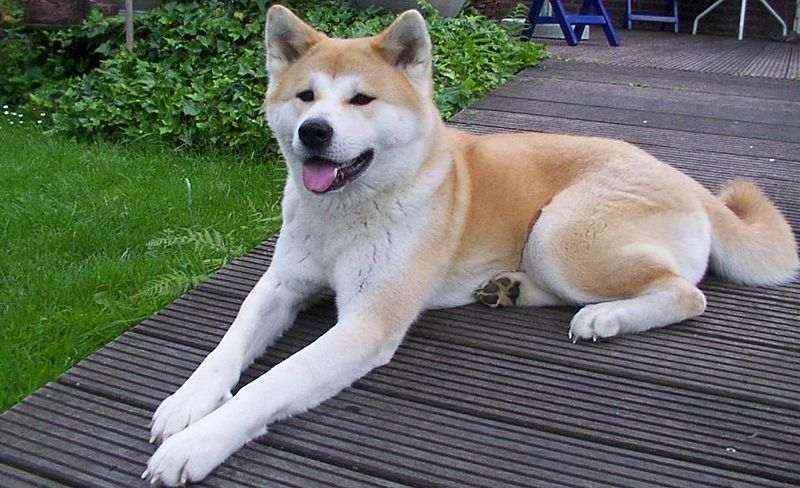

Το τρίχωμα του ποικίλει και μπορεί να έιναι μακρύ με ελαφρύ κυματισμό ή κοντό και σκληρό και στην ουρά να είναι πιο μακρύ. Κατά βάση, περισσότερο μαλλί υπάρχει στην περιοχή του κεφαλιού, των ποδιών και της ουράς. Τα μάτια του είναι σκούρα και όχι ιδιαίτερα μεγάλα και παρομοίως τα αυτιά του, που είναι μεσαίου μεγέθους και κρεμαστά. Το κύριο χρώμα του είναι άσπρο με κηλίδες σε γήινα χρώματα όπως καφέ, μαύρο, κανελί, αλλά εμφανίζεται και σε καφέ με ρίγες σε πιο σκούρες αποχρώσεις.Ιδιαίτερα έξυπνος, πιστός στην οικογένεια του και φιλικός. Ανήκει στην κατηγορία των σκύλων που αγαπά να περνάει χρόνο με τα παιδιά και να παίζει μαζί τους, ενώ θεωρείται υπομονετικό σκυλί και ανεκτικό. Ωστόσο το μεγάλο του βάρος μπορεί να προκαλέσει προβλήματα και για αυτόν τον λόγο κρίνεται απαραίτητη η σωστή εκπαίδευση από τον ιδιοκτήτη και η κοινωνικοποίηση του από πολύ μικρή ηλικία. Λόγω του όγκου του, επίσης δεν μπορεί να διαμείνει σε διαμέρισμα, καθώς χρειάζεται χώρο για να τρέχει και να εξασκείται. Είναι εξαιρετικός φύλακας και ειδοποιεί με το γάβγισμα του για πιθανόν εισβολές ξένων στο σπίτι.Είναι μια στοργική φυλή που αγαπάει τους ανθρώπους. Ο μόνος κίνδυνος για τα μικρά παιδιά από αυτά τα σκυλιά είναι ο όγκος τους, κινδυνεύουν χωρίς το σκυλί να το θέλει, να τα ρίξει κάτω, στη διάρκεια του παιχνιδιού. Κατά τα άλλα είναι απόλυτα αξιόπιστα.
Πιθανόν να παρουσιάσει καρδιακά προβλήματα, δερματικά και ανωμαλίες στις βλεφαρίδες του, παθήσεις γνωστές ως εντρόπιον και εξτρόπιον κατά τις οποίες οι βλεφαρίδες γυρίζουν προς τα μέσα και έξω αντίστοιχα. Δυσπλασία του ισχίου και του αγκώνα είναι επίσης συνηθισμένες παθήσεις. Όπως όλες οι μεγαλόσωμες ράτσες, το Αγίου Βερνάρδου, έχει τον κίνδυνο της στροφής στομάχου (bloat). Η πρόληψη είναι η καλύτερη θεραπεία μια και μικρά, συχνά γεύματα συντελούν στην αποφυγή της εμφάνισης της επικίνδυνης αυτής πάθησης. Επιρρεπής σε κρίσεις επιληψίας, έκζεμα και οστεοσάρκωμα, το οποίο πρόσφατα αποδείχτηκε ότι αποτελεί κληρονομική πάθηση στη ράτσα αυτή.Ο σκύλος του Αγίου Βερνάρδου είναι εύκολο να εκπαιδευτεί αφού είναι πολύ έξυπνο και έχει την επιθυμία να ευχαριστεί. Όπως σε όλες τις μεγαλόσωμες ράτσες, είναι σημαντικό η εκπαίδευση να αρχίσει από πολύ νωρίς, καθώς το τεράστιο μέγεθός του θα αποτελέσει μεγάλο πρόβλημα αν ο σκύλος είναι απείθαρχος και ανυπάκουος. Θα πρέπει να είσαστε συνεπής και αυστηροί με τους κανόνες που έχετε θέσει και να παραμένετε πάντοτε το αφεντικό. Η κοινωνικοποίηση με ανθρώπους, παιδιά και άλλα κατοικίδια είναι καίριας σημασίας και πρέπει επίσης να αρχίσει από πολύ νωρίς.
×
Aκίτα

|

|
| Pάτσα |
Ακίτα |
| Υψος |
Αρσενικό 64-70 εκ. Θυληκό 58-65εκ. |
| Βάρος |
36-68kg |
| Μεσος Ορος Ζωής |
13 Ετη |
| Xαρακτήρας |
Έμπιστο,Θαραλέο,Έξυπνο,Φιλικό |
Πληροφορίες
Τα ακίτα είναι μεγαλόσωμη ράτσα σκύλου η οποία κατάγεται από τις ορεινές περιοχές της βόρειας Ιαπωνίας.είναι δυναμική, ανεξάρτητη και κυρίαρχη ράτσα. Ως φυλή, τα ακίτα είναι γενικά ανθεκτικά, αλλά είναι γνωστό ότι πάσχουν από διάφορες γενετικές ασθένειες και είναι ευαίσθητα σε ορισμένα φάρμακα.Ιδιαίτερα επιφυλακτικό και κάπως επιθετικό με τους αγνώστους, το Ακίτα πρέπει να συνηθίσει στους ανθρώπους σε μικρή ηλικία, έτσι ώστε τα ένστικτα του φύλακα που διαθέτει να παραμείνουν ελεγχόμενα. Το Ακίτα μπορεί να είναι επιθετικά με άλλα σκυλιά του ίδιου φύλου, έτσι δύο αρσενικά ή δύο θηλυκά δεν πρέπει ποτέ να μείνουν μόνα μαζί. Το πρόβλημα είναι ότι αυτή η φυλή μπορεί να είναι δύσκολο να «διαβαστεί». Συχνά ενώ δεν εμφανίζει σημάδια επιθετικότητας και μπορεί να συνυπάρχει ειρηνικά με ένα άλλο σκυλί, μπορεί ξαφνικά από μια μικρή «διαφωνία», όπως διεκδίκηση φαγητού ή παιχνιδιού, να επιτεθεί με πρωτόγνωρη αγριότητα.
Αν έχετε μία μεγάλη αυλή με φράχτη, είναι το ιδανικό μέρος για να ζει και να ασκείτε το σκυλί σας. Τα Ακίτα μπορούν να ασκούνται και χωρίς εσάς. Τους αρέσει να πηδάνε, να τρέχουν και να παίζουν όταν θέλουν. Στα κουτάβια πρέπει να δίνετε χρόνο να ξεκουράζονται και προσοχή πρέπει να δοθεί στα κουτάβια κάτω των 18 μηνών καθώς θα προσπαθούν να τραβήξουν μεγάλα αντικείμενα. Υπάρχει κίνδυνος να μην μπορέσουν να δομηθούν σωστά τα οστά τους. Λόγω της σωματικής κατασκευής τους είναι ιδανικά για πεζοπορίες ακόμα και σε ανώμαλα εδάφη. Είναι φανταστικοί κολυμβητές, αν και δεν πρέπει να κολυμπούν όταν έχει πολύ κρύο γιατί το τρίχωμά τους δεν στεγνώνει τελείως.Τα Ακίτα χρειάζονται ένα έμπειρο ιδιοκτήτη. Είναι κυριαρχικά και πρέπει να θέσετε τους κανόνες από την αρχή, δηλαδή ότι εσείς είστε το αφεντικό. Δεν πρέπει να δείξετε σημάδια αδυναμίας, γιατί είναι πολύ έξυπνα σκυλιά και θα το εκμεταλλευτούν. Όταν είναι κουτάβι μπορεί να μάθει κάποιες μικρές εντολές συμπεριφοράς. Η εκπαίδευση πρέπει να αρχίσει από 4-6 μηνών. Κατά την εκπαίδευση πρέπει να βρίσκεστε σε προστατευμένο μέρος, έτσι ώστε ο Ακίτα σας να μην φεύγει και αποσπάται. Το Ακίτα μπορεί να τα πάει καλά με παιδιά μετά από σωστή εκπαίδευση από κουτάβι.
×
Aγγλικό Μαστίφ


|
| Pάτσα |
Αγγλικό Μαστίφ |
| Υψος |
Θηλυκό: 70-91 εκ. Αρσενικό: 70-91 εκ. |
| Βάρος |
Θηλυκό: 54-77 kg Αρσενικό: 73-100 kg |
| Μεσος Ορος Ζωής |
11 Ετη |
| Xαρακτήρας |
Καλόκαρδο,Ηρεμο,Στοργικό,Θαραλέο |
Πληροφορίες
ο
Το Μαστίφ είναι ένα σπάνιο σκυλί που σήμερα το συναντάμε περισσότερο στην Αμερική και λιγότερο στην Μεγάλη Βρετανία. Είναι ένας καλόκαρδος γίγαντας που δεν χρειάζεται πολλή τροφή σε σχέση με τον όγκο του, αλλά χρειάζεται χώρο για να τρέξει και αρκετή άσκηση, γιατί παρουσιάζει τάσεις παχυσαρκίας αν αφεθεί. Λαίμαργος σκύλος, αλλά πολύ χαριτωμένος και πολύ υπομονετικός, που όταν σε κοιτάει με αυτά τα μεγάλα μάτια, σε λυγίζει αμέσως. Απολαμβάνει το κάθε χάδι και την κάθε καλή λέξη που θα του πείτε. Με λίγα λόγια: ένας αξιαγάπητος σκύλος, παρά τον όγκο του.
Το τρίχωμα του Μαστίφ θέλει λίγη μόνο φροντίδα. Οι νεκρές και χαλαρές τρίχες θα πρέπει να αφαιρούνται με μια βούρτσα από καουτσούκ όταν το Μαστίφ μαδάει. Όπως και με τα άλλα μεγάλα σκυλιά, τα Μαστίφ χρειάζονται ένα μαλακό μέρος για να ξαπλώνουν για να αποφεύγονται σημάδια από την πίεση. Το Μαστίφ έχει διάρκεια ζωής 9-11 χρόνια και τα συνήθη προβλήματα υγείας περιλαμβάνουν την δυσπλασία του ισχίου και του αγκώνα (που μπορεί να το κάνει να κουτσαίνει ή να έχει αρθρίτιδα) και το φούσκωμα, το οποίο μπορεί να αποφευχθεί με την τοποθέτηση του πιάτου του σκύλου σε μια υπερυψωμένη επιφάνεια, κατανομή των γευμάτων μέσα στην ημέρα και με την αποφυγή της άσκησης αμέσως μετά τα γεύματα.
Με ένα τεράστιο κεφάλι και ένα τεράστιο σαγόνι γεμάτο δόντια που προκαλούν φόβο, το τεράστιο αυτό σκυλί δέχεται να γίνει αλογάκι για ένα παιδί χωρίς καμία διαμαρτυρία. Συνήθως η γούνα του είναι κανελλί ή μπεζ χρώματος, αλλά η μουσούδα του είναι πάντα μαύρη.
Πρόκειται για έναν μυώδη σκύλο με πολύ δυνατά μπροστινά πόδια και μια καρδιά που χτυπάει για εσάς, που θα τον βάλετε σπίτι σας και θα τον φροντίσετε.
Το διαμέρισμα δεν είναι το κατάλληλο μέρος για να φιλοξενήσει ένα Αγγλικό Μαστίφ, μια που χρειάζεται αρκετό χώρο. Παρολ'αυτά, είναι ένα ήσυχο σκυλί που θα γαυγίσει μόνο όταν νιώσει ότι κάποιος απειλεί την οικογένειά του.